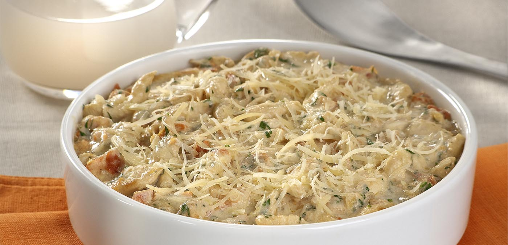

Saladas
Salada Colorida de legumes

Saladas
Salada tropical com rúcula

Carnes
Frango ao iogurte
Favoritos
1-Frango ao iogurte
Ingredientes
- 500 g de peito de frango, sem pele e sem osso, cortado em iscas
- 1 sachê de Caldo de galinha
- meia colher (sopa) de suco de limão
- 2 colheres (sopa) de margarina sem sal
- 1 cebola pequena picada
- 3 tomates grandes, sem sementes, picados
- meia xícara (chá) de salsa picada
- 1 copo de iogurte natural (170 g)
- meio copo de requeijão cremoso
- meia xícara (chá) de queijo parmesão ralado